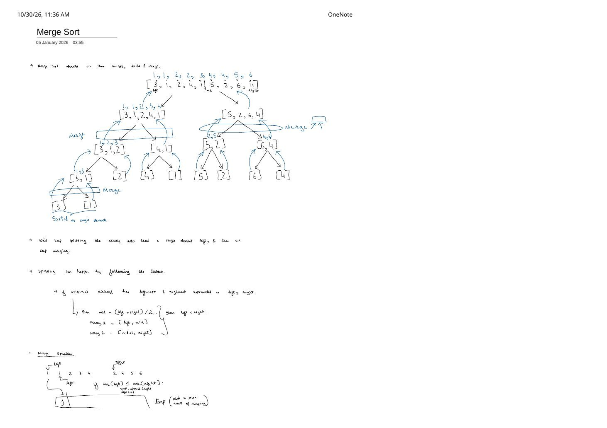
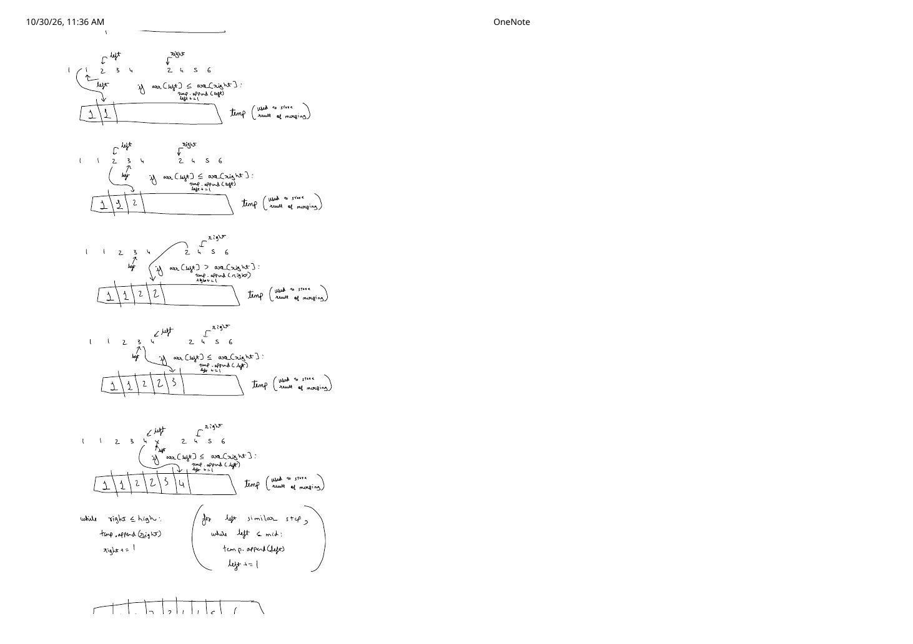
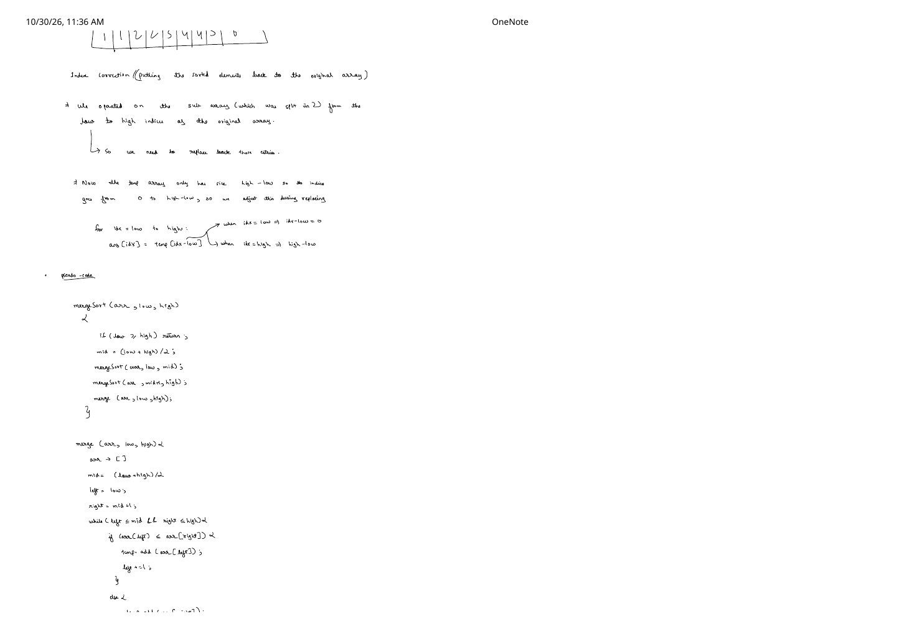
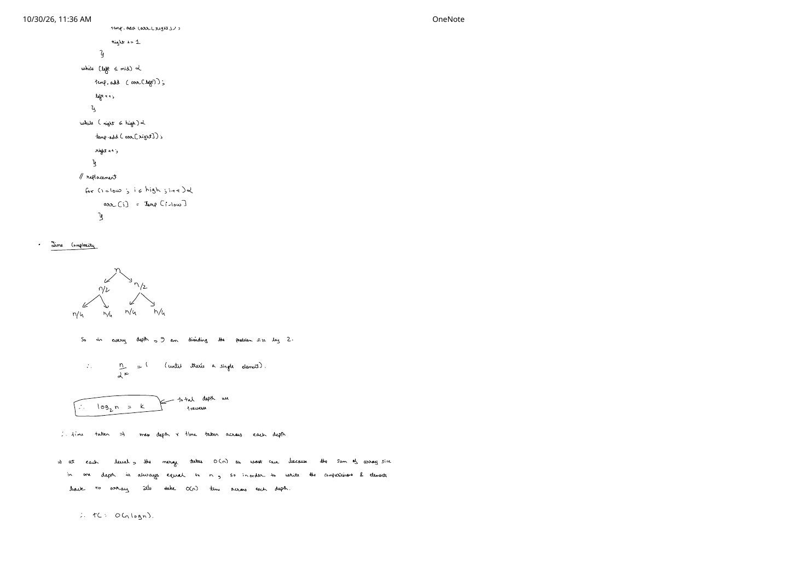
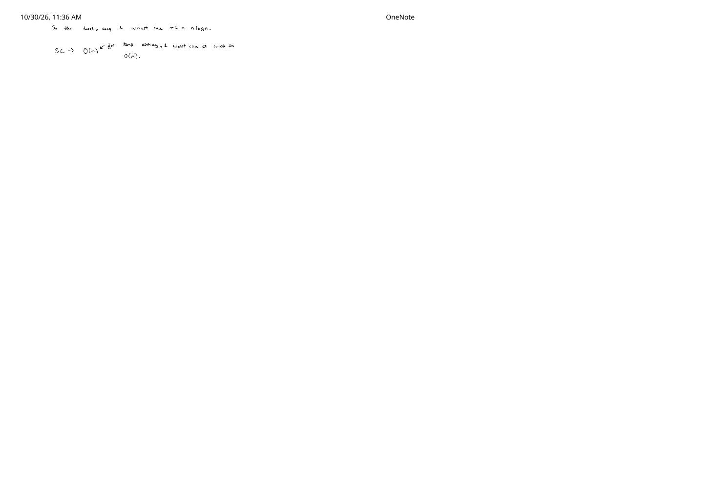

Merge Sort: Divide-and-Merge Recursion Tree & Index Offset Proof
Expanded from handwritten competitive coding study note: 04_Merge_Sort.pdf
Elementary adjacent-swap algorithms can eliminate at most one inversion per swap, trapping their worst-case runtime at $\Theta(n^2)$. Merge Sort shatters this quadratic barrier via divide and conquer: it recursively splits the array in half until single-element base cases are reached (which are trivially sorted), then zips sorted halves back together in linear $\Theta(n)$ time per level—guaranteeing deterministic $\Theta(n \log n)$ performance across every possible input order.
1. Core Concept & Recursion Invariant
Given subarray boundaries [low..high] (written as left, right on Page 1 of the handwritten note):
- Base Case (
low >= high): A subarray of size $0$ or $1$ contains no out-of-order pairs—it is already sorted! - Divide (
low < high): Compute the midpoint $\text{mid} = \lfloor(\text{low} + \text{high}) / 2\rfloor$ (in C++,low + (high - low) / 2to prevent signed overflow) and split intoarray1 = [low..mid]andarray2 = [mid + 1..high]. - Conquer & Combine: Recursively sort both halves, then run a two-pointer linear
mergeto produce a single sorted range across[low..high].
04_Merge_Sort.pdf: odd-length splits ($9 \to 5 + 4$, $5 \to 3 + 2$, $3 \to 2 + 1$) pose zero special cases when using [low..mid] and [mid + 1..high].2. Step-by-Step Two-Pointer Merge Dry Run (Pages 1–3)
Pages 1–2 zoom into the final root merge of left_half = [1, 1, 2, 3, 4] (indices $0 \dots 4$, pointer left = 0) and right_half = [2, 4, 5, 6] (indices $5 \dots 8$, pointer right = 5) into temporary buffer temp:
Pointer-by-Pointer Merge Trace Into temp
arr[left] = 1 <= arr[right] = 2$\implies$ append1,left++$\to$temp = [1]arr[left] = 1 <= arr[right] = 2$\implies$ append1,left++$\to$temp = [1, 1]arr[left] = 2 <= arr[right] = 2$\implies$ tie goes toleft! Append left's2,left++$\to$temp = [1, 1, 2]arr[left] = 3 > arr[right] = 2$\implies$ append right's2,right++$\to$temp = [1, 1, 2, 2]arr[left] = 3 <= arr[right] = 4$\implies$ append3,left++$\to$temp = [1, 1, 2, 2, 3]arr[left] = 4 <= arr[right] = 4$\implies$ tie goes toleft! Append left's4,left++$\to$temp = [1, 1, 2, 2, 3, 4](nowleft = 5 > mid = 4, so the left half is exhausted!).- Drain Remaining Elements (Bottom of Page 2): Run
while (left <= mid)(runs $0$ times) andwhile (right <= high)(appends remaining4, 5, 6from the right half), completing:temp = [1, 1, 2, 2, 3, 4, 4, 5, 6].
The Crucial Index Offset Correction: Why arr[idx] = temp[idx - low]? (Page 3)
When merging a mid-recursion slice such as [5, 2, 6, 4] at original array indices low = 5 .. high = 8, a newly created temp vector has length $\text{high} - \text{low} + 1 = 4$, so its valid indices are 0 .. 3 (0 .. high - low), not 5 .. 8!
Offset Mapping Formula (Page 3)
As idx loops over original array positions from low to high, subtracting low shifts the index back to 0-based coordinates in temp:
3. Clean C++ Implementations (+ Single-Buffer Optimization)
Pages 1–2 trace dynamic appends into temp (push_back) while Pages 3–4 write out the indexed merge loop and C++-style pseudocode. Note one critical subtlety between Pages 1–2 and Page 3: on Pages 1–2 the comparison is arr[left] <= arr[right] (which preserves stability by preferring the earlier left-half element on ties), whereas Page 3's quick pseudocode sketch wrote <. Always use <= in code!
#include <vector>
// 1. Direct C++ translation of the handwritten note (Pages 3-4, with '<=' for stability)
void mergeSubarrays(std::vector<int>& arr, int low, int mid, int high) {
std::vector<int> temp;
temp.reserve(high - low + 1);
int left = low;
int right = mid + 1;
while (left <= mid && right <= high) {
if (arr[left] <= arr[right]) { // '<=' takes left first on ties -> STABLE!
temp.push_back(arr[left++]);
} else {
temp.push_back(arr[right++]);
}
}
while (left <= mid) {
temp.push_back(arr[left++]);
}
while (right <= high) {
temp.push_back(arr[right++]);
}
// Index correction: temp is 0-indexed [0 .. high - low], arr slice is [low .. high]
for (int idx = low; idx <= high; ++idx) {
arr[idx] = temp[idx - low];
}
}
void mergeSort(std::vector<int>& arr, int low, int high) {
if (low >= high) return;
int mid = low + (high - low) / 2;
mergeSort(arr, low, mid);
mergeSort(arr, mid + 1, high);
mergeSubarrays(arr, low, mid, high);
}
// 2. Competitive Programming Optimization: Single pre-allocated O(n) scratch buffer
// Eliminates O(n) heap allocations across recursion nodes (and needs NO offset math!)
void mergeWithScratch(std::vector<int>& arr, std::vector<int>& buf, int low, int high) {
if (low >= high) return;
int mid = low + (high - low) / 2;
mergeWithScratch(arr, buf, low, mid);
mergeWithScratch(arr, buf, mid + 1, high);
// Optional early-skip: if max of left half <= min of right half, already sorted!
if (arr[mid] <= arr[mid + 1]) return;
int left = low, right = mid + 1, write = low;
while (left <= mid && right <= high) {
buf[write++] = (arr[left] <= arr[right]) ? arr[left++] : arr[right++];
}
while (left <= mid) buf[write++] = arr[left++];
while (right <= high) buf[write++] = arr[right++];
for (int idx = low; idx <= high; ++idx) arr[idx] = buf[idx];
}4. Time & Space Complexity Recursion-Tree Proof (Pages 4–5)
Deriving $\Theta(n \log n)$ From Tree Height $\times$ Work Per Level
- Maximum Tree Depth $k$: Each recursive level divides the subarray length by $2$ ($n \to n/2 \to n/4 \to \dots$) until single-element leaves are reached: $$\frac{n}{2^k} = 1 \implies 2^k = n \implies \boxed{k = \lceil \log_2 n \rceil}.$$
- Work Across Each Depth: At depth $d$, there are $2^d$ disjoint subproblems of size $\approx n / 2^d$. Because the sum of subarray sizes across any single depth is always $2^d \cdot (n / 2^d) = n$, the two-pointer comparisons plus copying back into
arrcost $\mathbf{\Theta(n)}$ total across depth $d$: $$T(n) = 2T(n / 2) + \Theta(n).$$ - Total Time (Best, Average & Worst Case — Page 5): $$\text{Total Time} = (\text{depth}) \times (\text{work per depth}) = \lceil \log_2 n \rceil \times \Theta(n) = \mathbf{\Theta(n \log n)}.$$
- Auxiliary Space Complexity (Page 5):
•temparray takes $\mathbf{O(n)}$ space at the root merge (freed before returning, so peak heap buffer is $O(n)$, not $O(n \log n)$!).
• Recursion call stack takes $O(\log n)$ frames.
• Total Auxiliary Space: $O(n) + O(\log n) = \mathbf{O(n)}$.
| Property | Verdict | Key Engineering Applications |
|---|---|---|
| Stable? | Yes | With arr[left] <= arr[right], equal elements never cross between left and right halves—the backbone of std::stable_sort and Timsort. |
| In-Place? | No (on arrays) | Requires $O(n)$ auxiliary buffer on contiguous arrays—except on Singly/Doubly Linked Lists, where pointer re-linking merges in $O(1)$ extra node space! |
| Bonus Superpower | Counts Inversions in $O(n \log n)$ | Whenever arr[left] > arr[right] during merge, every remaining element in [left..mid] is also $\gt \text{arr}[\text{right}]$ (since [left..mid] is sorted!), adding mid - left + 1 inversions in $O(1)$! |
5. Key Edge Cases & Subtle Bugs to Avoid
- Infinite Recursion if Splitting as
[low..mid - 1]and[mid..high]With Floor Division: Whenlow = 0, high = 1, floor division gives $\text{mid} = 0$, so recursing on[mid..high]callsmergeSort(0, 1)infinitely! With floor midpoint $\text{mid} = \lfloor(\text{low} + \text{high}) / 2\rfloor$, always pair[low..mid]and[mid + 1..high](since $\text{low} \lt \text{high} \implies \text{mid} \lt \text{high}$ and $\text{mid} + 1 \gt \text{low}$, both halves strictly shrink!). - Empty Array ($n = 0$): Calling
mergeSort(arr, 0, static_cast<int>(arr.size()) - 1)passeslow = 0, high = -1; usingif (low >= high) return;(rather thanlow == high) safely returns immediately!
From the Handwritten Notes
View original handwritten page — Merge Sort Page 1: 9-Element Divide-and-Merge Tree & Start of Merge


04_Merge_Sort.pdf: complete split & merge recursion tree on [3, 1, 2, 4, 1, 5, 2, 6, 4], midpoint split rules, and Step 1 of merging into temp.View original handwritten page — Merge Sort Page 2: Step-by-Step Two-Pointer Merge & Cleanup Loops


04_Merge_Sort.pdf: pointer-by-pointer comparisons merging [1, 1, 2, 3, 4] and [2, 4, 5, 6] plus while cleanup loops for remaining elements.View original handwritten page — Merge Sort Page 3: temp[idx - low] Index Offset Correction & Pseudocode


04_Merge_Sort.pdf: deriving arr[idx] = temp[idx - low] for 0-indexed temp and writing out mergeSort / merge pseudocode.View original handwritten page — Merge Sort Page 4: Merge Completion & log_2(n) Recursion-Depth Proof


04_Merge_Sort.pdf: finishing merge replacement loop and proving $n / 2^k = 1 \implies k = \log_2 n$ depth $\times O(n)$ work per depth $= O(n \log n)$.View original handwritten page — Merge Sort Page 5: Best/Average/Worst Time & O(n) Space Summary


04_Merge_Sort.pdf: invariant $O(n \log n)$ best, average, and worst-case time complexity and $O(n)$ auxiliary temp space.